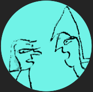

In this virtual exhibition medieval manuscripts with texts concerning the art of reasoning are shown. Discover how this art was taught in the medieval classroom, and how in medieval manuscripts readers left their traces while studying and practicing.
Read more about the aim and structure of the exhbition here.
Watch the trailer
Read more about the aim and structure of the exhbition here.
Watch the trailer